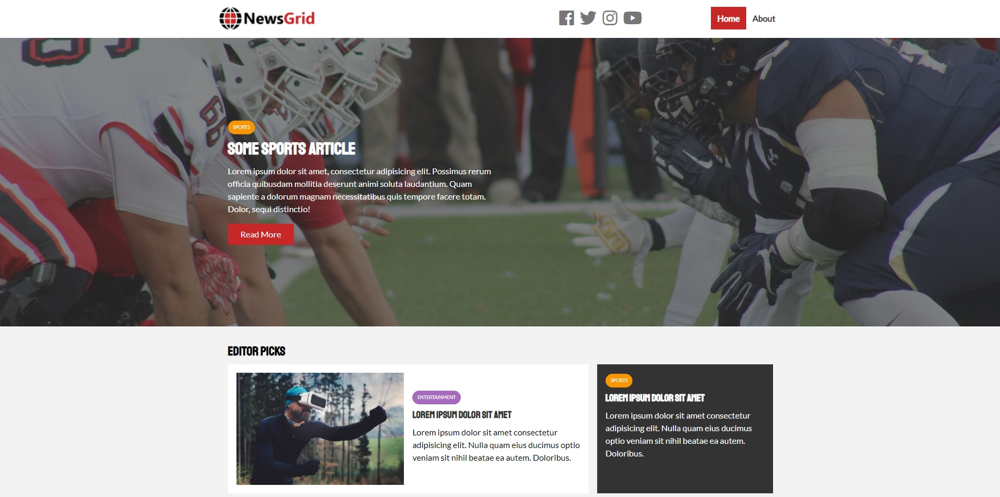
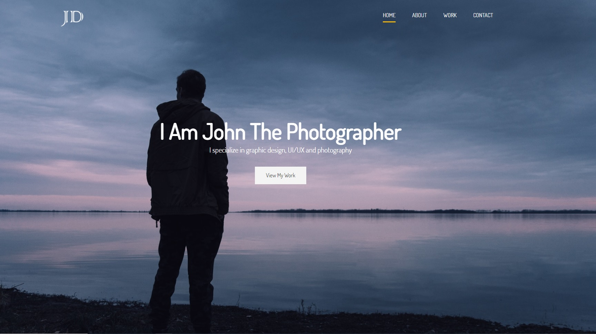
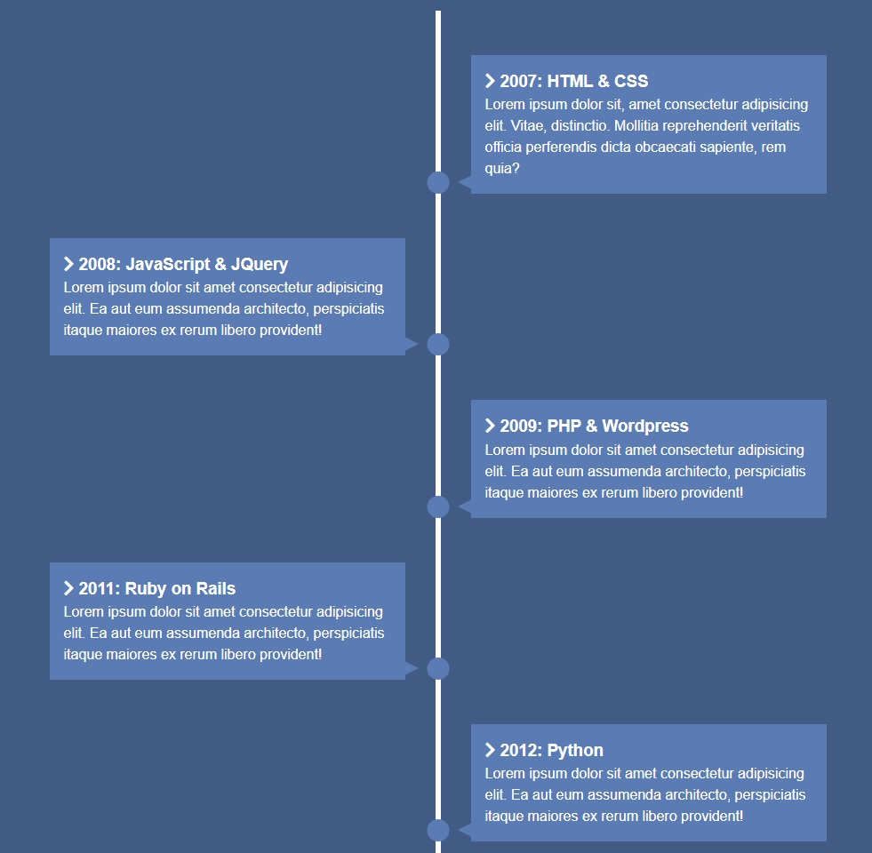
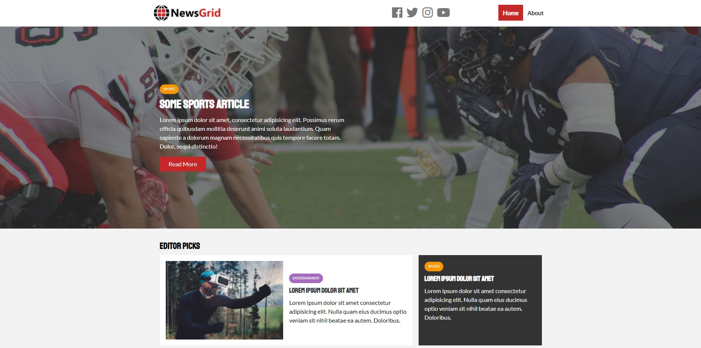
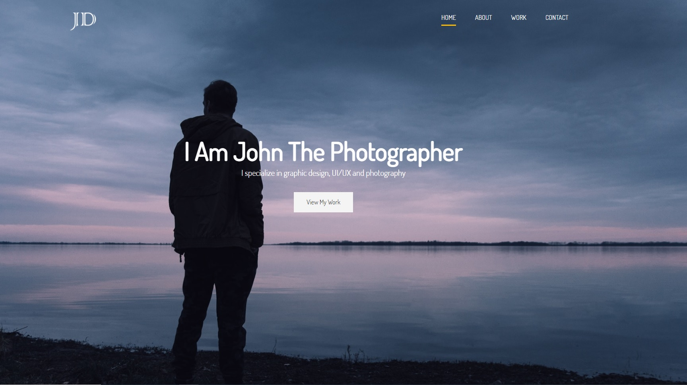
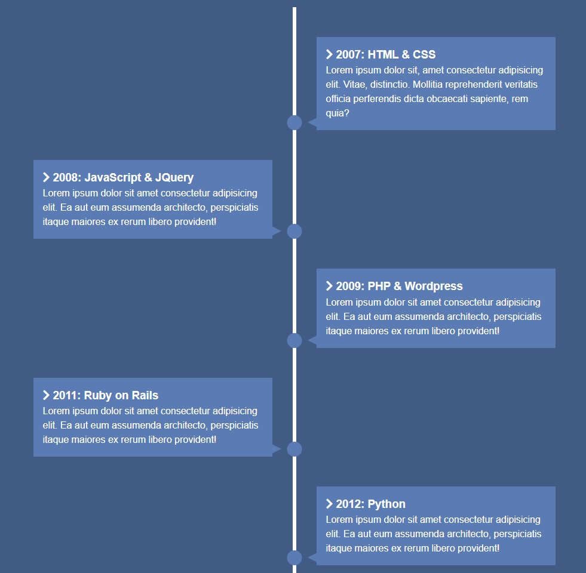

Work Experience
Bronzal Trade | 2010-2014
Bronzal Trade was a family owned company where I started my first working experience as Customer support agent and later on Sales manager.
Zlatara Cordier | 2014-2017
Zlatara Cordier was where I truly became a Sales Manager. I was selling and buying gold. Job was more than stresfull and because of the lack of security I had to change my career path.
Tutor ABC | 2017-2021
TutorAbc is a chinese company , I was working in as an English teacher ( ESL consultant ) teaching Chinese kids and adults English language. I have finished TEFL and TESOL courses and reached the peak as a teacher.
Freelance - Web Developing | 2021-
While teaching English I had a lot of free time, and since I was always interested in coding I was looking at Youtube videos about how to code. Then I enlisted on courses on Udemy for HTML, CSS, Sass, and JavaScript and started my Front-end Developer career.


 




